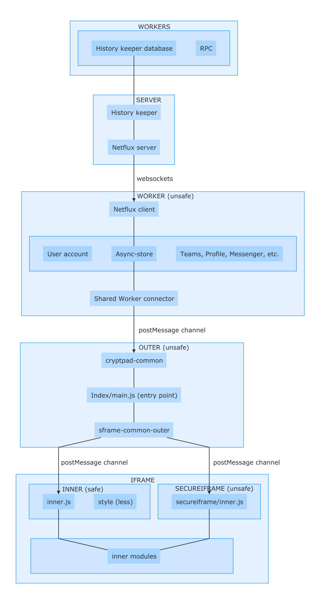

Client architecture#
The client architecture is split in 3 levels:
Outer corresponds to the base level, i.e. the HTML file loaded first by the browser.
The worker is common to all CryptPad tabs opened in the same browser and each tab contains its own outer and iframes.
Two iframes are loaded per tab, the first one containing the whole application interface, the second one containing the interface elements that must display confidential data.
Each of the three levels has distinct roles that are detailed in this section.

Worker#
Workflow#
The worker is the unique WebSocket link with the server for all CryptPad tabs. SharedWorker technology allows a single Web Worker to be shared between all the tabs opened on the same origin, with many advantages:
Gain in resources on the client (memory, CPU and network saved by avoiding the repetition of tasks)
Gain in resources on the server (only one connection with each client)
The workers represent code executed in a different thread from the main tab, allowing heavier calculations to be performed without slowing down the page.
Please note that not all browsers have implemented SharedWorkers. They are only available on Firefox and Chromium-based browsers. Internet Explorer as well as older versions of Edge do not support them but the newer versions of Edge are based on Chromium and allow it. Safari only supports them for recent versions as well (version 16 or newer).
For these obsolete browsers, the system automatically switches to classic Web Workers, i.e. 1 worker per tab. This still allows the use of a separate thread for heavier calculations, but it strongly slows down the loading of tabs when the user account contains a lot of data. Finally, if the WebWorkers have been disabled in the browser, a last-resort system is in place to perform the work of the worker in the main tab at the outer level. This has no impact on the functioning of the code but does not benefit from the advantages of the workers.
注釈
It is possible to easily disable the use of workers in CryptPad. This can facilitate debugging in some cases, since the Shared Workers console is not easily accessible. To do this, simply enter localStorage.CryptPad_noWorkers = "1" in the JavaScript console of the browser. To re-enable the Shared Workers, you must then delete or change the value of this key in localStorage.
Content#
The worker level is opened from the outer level, once initial checks have been performed. It's the outer code that decides which type of worker it can use (SharedWorker, WebWorker or nothing). It then initializes the worker with the "connector" corresponding to this type of worker:
www/common/outer/sharedworker.jswww/common/outer/webworker.jswww/common/outer/noworker.js
Once the connector is loaded with the desired technology, the exact same code governs all 3 types of systems.
An asynchronous communication channel is first initialized with the outer level to receive commands and send events.
A file
www/common/outer/store-rpc.jstranslates text commands into functions to be called.A Store object is created in
www/common/outer/async-store.js. It contains the functions corresponding to the commands and loads all the modules necessary for the worker to function.
Access to content stored in the server database is done with commands to the worker. This content represents:
User account data (name, personal keys, access to the different modules)
Drive, shared folders, contacts, team access keys, profile, settings, etc.
Team data
Drive, shared folders, members, metadata (avatar and team name)
Access to documents for each CryptPad tab opened in the browser
Debugging#
When a user encounters a bug in CryptPad, everything usually happens at the client level and no data is transmitted to the server. The JavaScript console can then detect any error that may have occurred in the code, but this console only concerns the current tab, i.e. it is limited to the outer and inner levels and it is not possible to access the "SharedWorker" level directly.
To access the SharedWorker's console:
In Chrome and Chromium
Open the page
chrome://inspectOpen the "Shared workers" section
Locate the desired worker and click on "inspect"
In Edge (based on Chromium)
Open the page
edge://inspectOpen the "Shared workers" section
Locate the desired worker and click on "inspect"
In Firefox
Open the
about:debuggingpageOpen the "This Firefox" part
Locate the desired worker in "Shared Workers" and click on "Debug"
Outer#
Workflow#
The level called outer is the base level, corresponding to the HTML file loaded by the browser. Its name comes from the fact that the code is located outside of the iframe.
Each application starts with its own file "index.html". This file will load the basic JavaScript code, usually located in a "main.js" file for the application. Here we try to initialize the different levels as quickly as possible because the outer level doesn't display any interface and displaying a white screen is not interesting for the user.
The "main.js" file of each application will then start loading the main code, common to all applications at the outer level. The first part is located in www/common/sframe-common-outer.js. This is the module that will handle the communication between the outer and inner levels. In the same way as for the worker, these 2 levels can send commands or events to each other.
This module will also load www/common/cryptpad-common.js which represents the communication between the outer and worker levels. "Cryptpad-common" will first choose the best type of worker available in the browser. It will initialize it, create a communication channel and then send the main command to load the user account.
Once the user account is loaded by the worker, "sframe-common-outer" will be able to start loading the document (if applicable) or the content of the selected application.
The outer level thus functions as an intermediary between the interface and the "local database".
Content#
The tasks performed by outer are not limited to initializing content and transmitting messages. The code is based on the principle that several CryptPad tabs will be opened in the browser. The SharedWorker performs regular tasks in a thread common to all these tabs, but this thread must not be overloaded at the risk of slowing down all the tabs. This is why, when a tab wants to access a collaborative document, the recovery of the encrypted content is done by the worker, but the decryption itself is done in outer.
The outer level also handles some document operations requiring encryption like changing the password of a document or making a copy of it.
Inner#
Workflow#
When a new tab is opened, outer will load the main inner iframe as soon as possible. Each application has its own page "inner.html" which represents the starting point of the iframe. This file will then load the basic code of the application "inner.js", which will be responsible for opening all the necessary modules. Most of the modules being common to all applications, the "inner.js" file is often the only file specific to a given application.
The important elements loaded by "inner.js" are about the communication with outer, the common interface elements (toolbar, reusable menus, etc.) but also the whole style of the application. The style is loaded by a ".less" file specific to the application from "inner.js". The less files are compiled to CSS directly in the client's browser. This allows for the full use of advanced LESS functions, for example mixins, without worrying about adding a build step.
The purpose of the main inner iframe is to work with a different domain (or HTTP origin), which benefits from additional "cross-domain" protections. This iframe is the only part of the system that displays an interface where users interact with each other, which makes it particularly vulnerable in case of a code flaw. Isolating it, on the one hand within an iframe, and on the other hand with a different domain, makes it possible to protect all data that is not directly displayed in the document. It is in fact impossible to recover the keys of the current document from the inner iframe. Only the decrypted content is accessible, as well as the public data of the user and the current users of the pad.
To display sensitive data such as the document link, password, or owners, the share or access modals are opened in a separate iframe, called "secure-iframe". This secure iframe has access to sensitive data, but it has no direct contact with the main inner iframe. All possible exchanges between the main iframe (which displays the opened application) and the secure iframe (which displays sensitive data) are done through outer. These two iframes are both daughters of outer and therefore cannot access each other's data which preserves the sandbox behavior.
Content#
The inner iframes display the entire user interface. This concerns both elements common to all applications (toolbar, user menu, main actions) and elements common to collaborative documents (access or sharing modals, user list) as well as elements specific to each application (content rendering). The "share", "access", "properties" modals as well as the upload or file selection popups are displayed by the secure iframe. All the rest is in the main iframe.